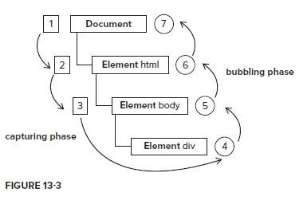

js中的事件发生分为捕获阶段(capture pahse)和冒泡阶段(bubbling phase)
在IE9,chrome里,事件会冒泡到window对象;而IE6,7,8中仅仅冒泡到document对象
DOM0级绑定的监听, this是触发这个事件的元素,没有兼容问题
DOM0级的时间还可以直接写在HTML标签里面,不过耦合性很强,一般不会用.
要删除一个元素的事件,可以把这个元素的事件设置为null,如下
oDiv.onclick = null; 这样可以取消oDiv元素的监听事件
用DOM0级添加的监听,如果添加给了同一个元素,监听只会执行后面一个,如下面这个例子,后面的语句会覆盖之前的语句,弹出"嘻嘻"
box1.onclick = function(){
alert("哈哈");
}
box1.onclick = function(){
alert("嘻嘻");
}
语法格式:
oDiv.addEventListener(事件名称,执行函数,是否监听捕获阶段)
参数1: 事件名,可以不写on,用双引号包裹. 如click/mouseover/mouseout 等
参数2: 执行函数, 可以是匿名函数,也可以是有名函数
参数3: 布尔值,false监听冒泡阶段, true监听捕获阶段
addEventListener添加的监听要取消元素需要使用 removeEventListener方法, 并且两个方法传入的参数需要完全一样,
因此如果是添加的事件处理函数是匿名函数, 则无法取消事件监听.
addEventListener可以重复添加相同事件名的事件
下面的案例给box1添加了2个相同的时间,两个事件不会覆盖,会先弹出"嘻嘻", 再弹出"哈哈";
IE6,7,8中没有addEventListener, 它们使用的是attachEvent
oDiv.attachEvent(eventType, function)
参数1: 事件类型. 必须写on
参数2: 事件处理函数
没有第三个参数, 这个方法不能监听捕获,只能监听冒泡阶段
IE6,7,8中事件处理函数里面的this,不是触发事件的对象,而是window对象
box1.attachEvent("onclick", function(){
alert(this === window); //true
});
同一个事件名的多个监听,会反着执行.
DOM0级事件 oDiv.onclick = function(){}:
只能监听冒泡阶段,高版本浏览器会冒泡到window对象, 低版本浏览器冒泡到document对象. 事件名加"on" this是触发事件的对象
不能有同名事件, 同名的两个事件后面的会覆盖前面的.
DOM2级事件 oDiv.addEventListener(eventtype,fn,use capture):
能监听捕获和冒泡阶段, 事件名不加"on";
第三个参数为true, 监听捕获, 为false, 监听冒泡. 会冒泡到window
this是触发事件的元素;
可以有同名事件, 顺序执行.
IE6,7,8中的DOM2级事件使用自己的方法: oDiv.attachEvent()
这个方法没有第三个参数, 只能监听冒泡阶段, 不能监听捕获. 会反着执行
事件名需要写on, 可以有同名事件, 不覆盖
事件只会冒泡到document
这个方法中事件处理函数会在全局作用域内运行 , 因此事件处理函数的this是window.
DOM0 级事件中的事件处理函数在其所属元素的作用域内运行,内部this是元素自己
我们把事件的处理函数,当做一个回调函数, 当(如click)事件发生时才调用这个函数.
浏览器在调用时间处理函数的时候会传进去一个实际参数
这个参数是一个对象, 里面包含这个事件发生时的一些属性和方法:如,发生的位置,发生的对象等.
因此, 事件处理函数需要一个形式参数来接收.
Event 对象代表事件的状态，比如事件在其中发生的元素、键盘按键的状态、鼠标的位置、鼠标按钮的状态。 事件通常与函数结合使用，函数不会在事件发生前被执行！
获得鼠标的当前位置: event.clientX , event.clientY;
得到的是鼠标相对于浏览器边缘(视口)的距离;
获得鼠标在盒子内的位置: event.offsetX, event.offsetY;
得到的是鼠标在触发点击事件的盒子内的相对位置;
之前的火狐不兼容,不过新版本已经兼容这个属性.
获得鼠标到屏幕的位置: event.screenX, event.screenY;
1. 阻止默认事件
event.preventDefault()
IE6,7,8中用event.returnValue = false代替
例如鼠标滚轮滚动时阻止默认的页面滚动
用能力检测来解决兼容问题
2. 停止传播事件流
event.stopPropagation()
IE6,7,8中用event.cancelBubble=true代替
终止事件在传播过程的捕获、目标处理或起泡阶段进一步传播。调用该方法后，该节点上处理该事件的处理程序将被调用，事件不再被分派到其他节点。
用能力检测来解决兼容问题
3. 返回事件的目标节点(触发该事件的节点)
event.target
IE6,7,8中用event.srcElement代替
返回事件的目标节点（触发该事件的节点），如生成事件的元素、文档或窗口。
属性的兼容问题可以用一个短路语法来解决兼容性问题
var targetElem = event.target || event.srcElement;
当窗口卷动时触发
兼容问题: 高级浏览器中, 窗口卷动值认为是body对象的.
在IE6,7,8中窗口卷动认为是html标签的
兼容性解决方法:
document.body.scrollTop||document.documentElement.scrollTop
窗口卷动值即可以读取,也可以设置,还可以设置为动画效果
设置窗口卷动值时的兼容性问题:
document.body.scrollTop = document.documentElement.scrollTop = 0 ;
利用变量连等的方式来设置卷动值, 以解决兼容性问题;
该事件中比较重要的属性是wheelDelta . 可以获得一个值与鼠标滚轮滚动的方向有关
在高级浏览器中event.wheelDelta:
向上滚返回120,
向下滚返回-120
滚动快速可以返回更大的值
在火狐上用的是自己的鼠标滚轮事件DomMouseWheel,并且这个事件只能通过标准的DOM2级事件绑定方式添加.
表示滚动方向的属性是event.detail , 该属性得到的值是反着的
向上滚动为-3
向下滚动为3
兼容性解决方法. 添加浏览器不认识的事件浏览器会静默,不会报错,因此可以添加两个监听来解决
支持该事件的JS对象有 document, image, link, textarea
该事件会返回属性: event.keyCode 表示当前按下的键
延迟加载, 在页面中所有元素加载完毕之后, 触发这个事件
用DOM2级事件绑定的方式可以添加多个window.onload事件
window.onload在应对几个以下情况的时候, 非常有用.
1. 表单验证
2. onscroll事件.
其他的刚性的, 事关不穿帮, 事关安全的事件, 都应该写在window.onload里面